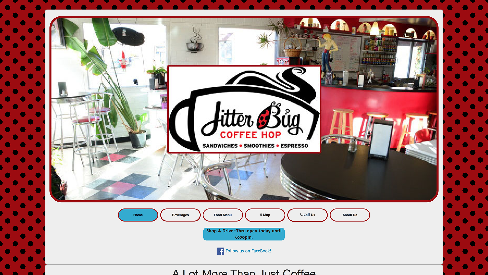
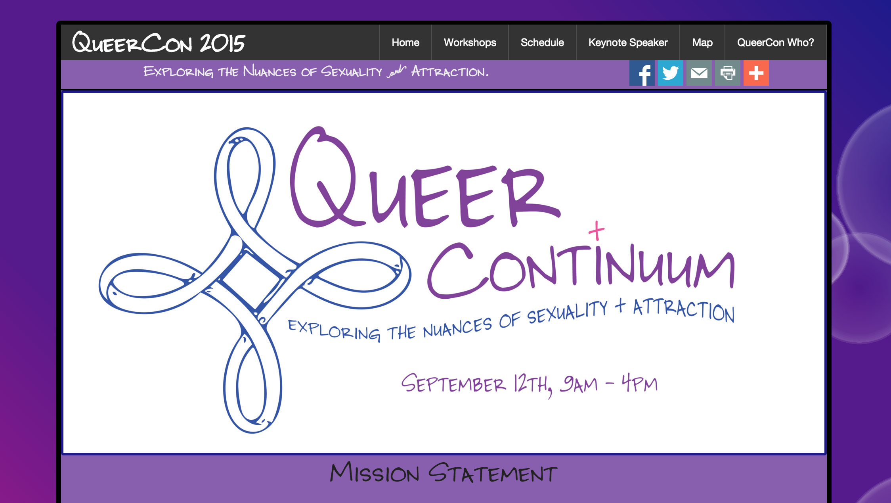
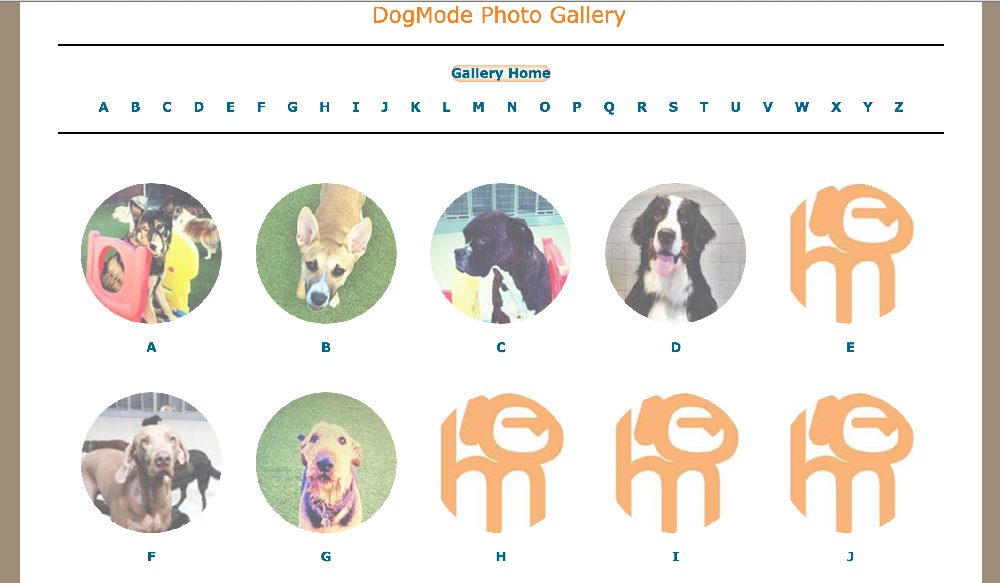

I am ready to get to work! I am highly capable, well-rounded, knowledgeable, and motivated to create, update, and manage your websites and applications.
My background includes 15+ years of extensive IT experience in creative and support roles with web front-end and back-end technologies and other enterprise applications for IBM and AT&T.
More recently, I have been creating and hosting WordPress and Joomla sites myself, for friends, for startups, and community organizations. My more recent training and experience builds on that experience.
Update (October 18, 2015)
I've been dividing my time between continuing my web-based training (JavaScript, AngularJS, ReactJS, PHP, MySQL, MeteorJS), and a few projects:
Recent work:
Jitterbug Coffee Hop -- Site Redesign
Summary: Conversion of existing site to a mobile-first, responsive web app using html5, css3, Zurb Foundation, and Angular.JS..

Site landing page -- link to Jitterbug Coffee Hop (October 2015)
Event page for Utah Pride Center's "Queer Continuum" Conference
Summary: Using client-provided artwork, created a mobile-first, responsive web app using html5, css3, Zurb Foundation, and Angular.JS..

Site landing page -- link to 2015 Queer Continuum Conference ( September 2015)
Indexed photo gallery for DogMode.com
Summary: Mobile-responsive sub-section of existing site. Used CSS3 and HTML5 to create an attractive and engaging, mobile-friendly interface for their existing photo gallery while keeping with the sites original look and feel.

Site landing page -- link to DogMode's new Photo Gallery(March 2015)
Current projects that I'm involved with:
Site redesign for Rebirth OB/Gyn medical clinic -- http://www.rebirthobgyn.com
Creating a custom theme for this WordPress site, with new photographs, and new sections for more information for current and prospective clients.
New site for Massage Therapy Practice
Creating a new site with scheduling and online payment features for busy local Licensed Massage Therapist. Creating a custom WordPress Theme, and integrating therapist's preferred scheduling method.
Site redesign for Transgender Education Advocates of Utah -- http://teaofutah.org
Develop new UI/UX by completely reimagining the site with input from organization board and staff. Converting from existing WordPress site to a NationBuilder CMS site with a customised theme.
New site for Social Work practice.
Event page for a new annual conference in Salt Lake City. This is a volunteer project. This will be in Zurb Foundation, with Angular, and (eventually) Ionic (Cordova).